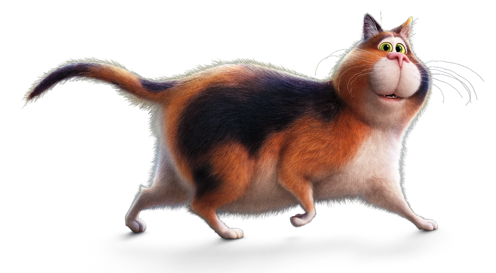

Mr. Mittens
Therapy Cat
Spends his days purring, cuddling and comforting patients in their hospital rooms. The cozy cat is enlisted to assist Joe Gardner when he’s hospitalized after an unfortunate fall.
Despite a job well done, Mr. Mittens ends up in the wrong place at the wrong time, embarking on an unexpected adventure.